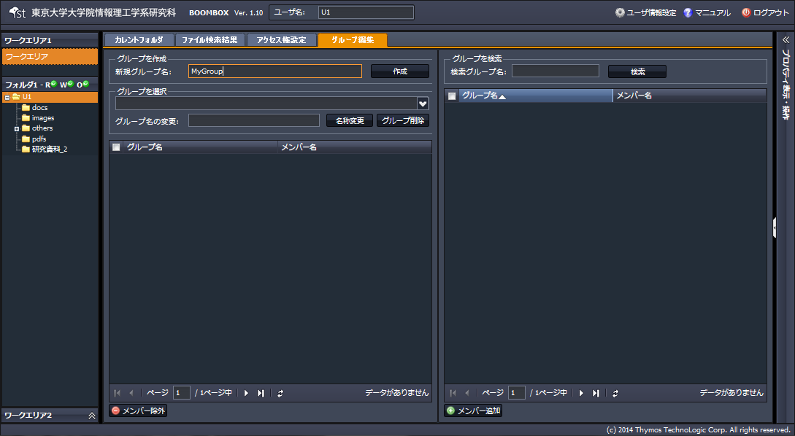
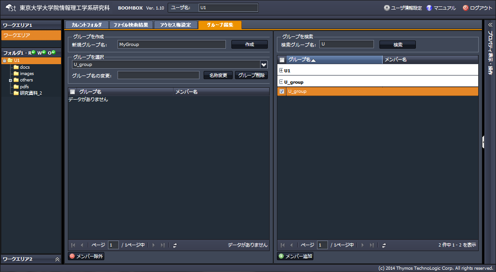

SecretFilesマニュアル
4.SecretFilesサービス(操作編)
4.2.10 グループの作成、編集
共有の為のグループの作成、編集の手順を説明します。
(1) グループを作成する
中央ペインの【グループ編集タブ】を開き、作成するグループ名を登録し、『作成』をクリックし、グループを作成します。

(2) グループにメンバを追加する
(1)の手順で作成したグループリストを表示させ、ペイン右側で検索した、メンバを追加します。また、作成したグループ名の変更や、グループを削除する事ができます。
